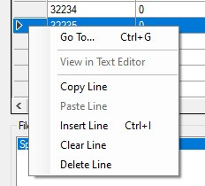

Montures volantes en Azeroth
Quelques explications
Ce tutoriel s'adresse aux personnes utilisant une version WoW en dessous de Cataclysm. A cette époque, l'utilisation de montures volantes en Azeroth n'était pas possible car les maps n'étaient tout simplement pas prévues pour ça (beaucoup de zones vides).
Cette limitation est imposée par le client de jeu. En effet, chaque spell de monture volante dispose d'un flag interdisant son utilisation en dehors de l'Outreterre ou du Norfendre :
SPELL_ATTR4_CAST_ONLY_IN_OUTLAND = 0x04000000, // 26 Can only be used in Outland.
Source
Ce tutoriel explique comment retirer cette limitation. Il est toujours possible de bidouiller des choses pour que vos joueurs puissant voler sans modifier le client de jeu mais nous souhaitons ici un comportement le plus Blizz'like possible.
Les modifications
Dans cet exemple, nous allons partir sur le sort Griffon doré (32235) mais le procédé reste le même quelque soit le sort de monture volante utilisé.
Grâce au logiciel WDBXEditor, ouvrez votre fichier Spell.dbc. Libre à vous d'utiliser un autre logiciel que vous maitrisez mieux, la modif reste la même.
Repérez la ligne du sort, faites un clic droit sur la ligne (dans la zone grise) puis copy line

Ensuite, dirigez vous tout en bas de la table, faites un clic droit sur la toute dernière ligne (toujours dans la zone grise et marquée par un point) et faites Paste line
Le logiciel génère pour vous un nouvel ID de sort, c'est celui ci que vous utiliserez en jeu.
Modifiez ensuite la colonne AttributesExD pour retirer ce flag (inscrivez 0)
Il nous vous reste plus qu'à sauvegarder votre Spell.dbc et le placer :
- Sur votre serveur (dossier dbc)
- Sur votre client, soit en créant un nouveau dossier
patch-x.mpq dans votre client ou en créant un nouveau patch MPQ avec le logiciel MPQEditor. Dans les deux cas, votre Spell.dbc doit être placé de manière à respecter l'arborescence suivante : \Data\patch-Z.MPQ\DBFilesClient\Spell.dbc (sinon le client ne prendra pas en compte votre fichier)
Il est impératif d'avoir la modification côté serveur et client. En effet, le client de jeu fait une première vérification (sans communiquer avec le serveur). C'est cette vérification qui peut vous sortir le message inutilisable ici. Enfin si le client est patché mais pas le serveur, vous aurez un message du style Vous n'êtes pas dans la bonne région car le serveur fait une vérification (et heureusement!)
Et voilà !
Vous pouvez tester la modification en effectuant un .learn ID. Concernant l'obtention par les joueurs, vous pouvez par exemple créer un item ou un parchemin qui fait apprendre le sort.
Remerciements
Je remercie Noc pour son tutoriel original qui m'a donné les pistes nécessaires à la réalisation de ce tutoriel. Je remercie également Ithorgrim pour m'avoir trouvé THE monture volante qui fonctionnait à l'époque, sans quoi, j'aurais galéré à trouver la bonne colonne à modifier 😃